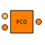

| Control_in | PORTS_LIB.analog_signal | (n = 5) | IN | ||
| Control_out | PORTS_LIB.analog_signal | (n = 5) | OUT | ||
| Run_Order | PORTS_LIB.bool_signal | (n = 1) | IN | Run order from Master |
| AC4082_Asp | REAL | Accumulator auto set point | degC | ||
| AC4082_Tsp | REAL | Accumulator temperature set point | degC | ||
| AC4082_Usp | REAL | Accumulator user set point | degC | ||
| EH1a52 | REAL | Heater power signal in % (0-100) | 0-100 | ||
| EH4082_OutMax | REAL | Accumulator heater power high limit | |||
| LP1002 | REAL | Pump speed signal | |||
| LP1002_SC_OK | BOOLEAN | Flag to check if subcooling at pump inlet is OK | |||
| LP1002_SC_ST | BOOLEAN | Flag to check if subcooling at pump inlet is OK | |||
| LP1002_Tt | CONST REAL | 0 | Subcooling threshold for pump inlet | K | |
| LP1002_start | BOOLEAN | Pump start signal | |||
| Phase | REAL | Sequencer state | |||
| SC1092 | REAL | ||||
| ST1092 | REAL | Pump inlet saturated temperature | degC | ||
| ST4082 | REAL | Accumulator saturated temperature | degC | ||
| TT1092 | REAL | Pump inlet temperature | degC | ||
| Tr0 | BOOLEAN | Stand by/Safety position | |||
| Tr1 | BOOLEAN | Start position | |||
| Tr2 | BOOLEAN | Chiller start | |||
| Tr3 | BOOLEAN | Accumulator cool down |
Document generated automatically (Date: 2021:03:16, Time: 14:29:38)